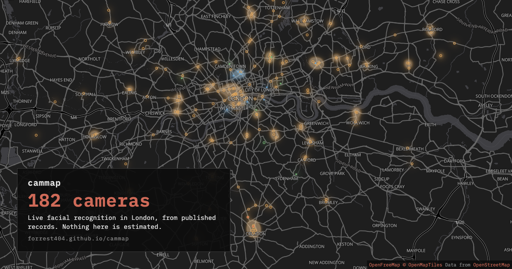

For the press
cammap is a map of the live facial recognition camera sites in London that the public record supports - the Metropolitan Police's van deployments, its fixed cameras in Croydon, the stations the British Transport Police has run it at, and the shops that have said they use it. Nothing on it is estimated. This page is what to take from it: the counts, how it was made, the record itself to download or query, the terms it may be reused under, a picture, and where to send a question.
The counts
The figures are worked out from the record when this page loads. Without JavaScript, the line under the map gives the count and the reach of the sources, and the CSV below is the record itself, one camera per line.
How the map was made
Every entry comes from a published document, and each one says which. The Metropolitan Police publishes a record of where its live facial recognition vans were deployed, by period; the British Transport Police publishes a register of its station trial; the fixed cameras and the shops rest on the Met's own announcement and on named press reporting. The record is one file of comma-separated values, one camera per line, edited by hand from those documents, and a script writes everything the site shows from it: the data the map draws, the rows its database is filled from, and the files below. Each camera carries the name of the record or report it rests on and, where there is one, a link to it; where no source is known the map says nothing rather than something vague, and where a source gives no value the record holds none.
The map does not say that a van is anywhere now. A van parks for a shift and drives away, so there is no hour at which "a van is at this spot" is a thing the record can support; every van site is marked as a place a van has been sent, this many times, most recently in this year, and sits behind the map's Legacy toggle. The map does not predict: using the record to guess where the vans will go next was considered and dropped, because a confident guess beside a public record invites people to read it as one. What it offers instead is the record's own answer - which sites have been used again and again - and a slider that shows the sites recorded in any one year. A site the record gives as a span, 2023 to 2025 say, is shown in every year of the span, because the record does not say which year each visit fell in, and the map will not choose.
Nor does it claim a precision the sources lack. The Met's record gives a van site as a street or a district, never a coordinate; where it gives only an area the pin sits at the middle of it, the entry says so, and the map draws it with a wider, fainter ring so the difference can be seen. A station is the station, not the spot on the concourse. And the map is not complete, by construction: a shop is not required to publish where its cameras are - a sign on the door is the whole of the disclosure - so only the shops that have named their stores are on it, and a place that is not on the map is not known to be free of one. Anyone can report a camera, with a photograph; it goes on the map when a moderator has checked the report, or when enough people have reported the same spot independently, and the map says separately how many cameras came that way.
The record, to take away
- cameras.csv - the record itself, one camera per line.
- cameras.geojson - the same cameras for a map tool; it opens in QGIS and in Datawrapper.
- The data page - what every column means, and how to read the same record over the map's own API, with a request to copy.
Reusing it
The record is published under the Open Database License 1.0: quote it, plot it, join it to your own data, publish what you make, commercially or not, provided you attribute it and share a database you build on it under the same terms. The attribution to use is
Contains data from cammap (https://forrest404.github.io/cammap/), made available under the Open Database License (ODbL) 1.0.
For a sentence in an article, "according to cammap, a volunteer map of the public record" is enough. Each entry's own source - the Met's record, the BTP register, the named report - should be credited where your use rests on it. The code that draws the map is not licensed for reuse; the licence sets out both.
A picture

Standing in front of one
What the law says a person can and cannot be made to do in front of a facial recognition camera, with every claim linked to the document it comes from, is on the rights page; what the map does and does not claim is on the About page.
Reaching the project
cammap is run by volunteers, with no organisation behind it and no names on it. The way to reach it is the repository's issues page: github.com/Forrest404/cammap/issues. A question asked there is public, which is honest about what the project is; a correction to the record - a site that has closed, a source that has moved, a pin in the wrong place - is best sent the same way, with the document it rests on.